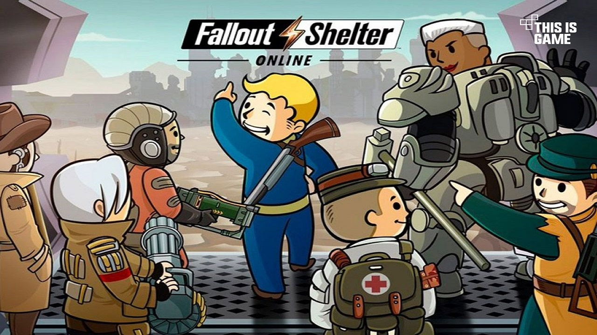

بهگفته تاد هاوارد، شرکت بتسدا در آینده یک بازی موبایل دیگر را به بازار عرضه خواهد کرد.
به نظر میرسد شرکت بتسدا در حال حاضر روی یک بازی موبایل جدید کار میکند. بااینحال هنوز مشخص نشده است این بازی براساس کدام یک از فرانچایزهای معروف این توسعهدهنده خواهد بود. اخیرا تاد هاوارد، تهیه کننده اجرایی و کارگردان بازی استارفیلد در بتسدا، در مصاحبهی جدید خود اعلام کرد این شرکت یک بازی موبایل جدید را در دست ساخت دارد. هاوارد در مورد تفاوت طراحی مفهومی یک بازی کنسولی با یک بازی موبایل توضیح داد: «خب، ما کارهایی انجام دادهایم و یک بازی موبایل جدید داریم که در حال کار روی آن هستیم. هنوزآن را معرفی نکردهایم. من عاشق آن هستم». متاسفانه هاوارد در ادامه هیچ جزئیات بیشتری در مورد ژانر، تاریخ انتشار و منبع الهام این بازی جدید را ارائه نکرد. بااینحال او توضیح داد که این اثر جدید قرار است بهجای یک بازی که در زمان کوتاهی تمام شود، یک تجربهی عمیقتر باشد: «ما با بازیهایمان بهویژه Fallout shelter، فهمیدیم که مردم برای یک یا دو ساعت به تجربهی بازی مینشینند. آنها فقط مینشینند و بازی میکنند. تعداد زیادی از مردم ساعتها در روز آن را بازی میکنند».
Fallout Shelter در سال ۲۰۱۵ بهعنوان یک بازی شبیهساز ساخت و مدیریت منتشر شد که در آن بازیکنان یک پناهگاه را در اختیار میگیرند و به مرور زمان آن را گسترش میدهند. بااینحال شرکت بتسدا از آن زمان تاکنون بازی دیگری روی موبایل عرضه نکرده است. احتمالا مدتی طول می کشد تا اطلاعات بیشتری در مورد این بازی موبایل جدید بشنویم. چراکه هنوز بتسدا بهصورت رسمی به تایید و معرفی آن نپرداخته است. بازی Fallout Shelter تقریبا همزمان با عرضهی Fallout 4 روی موبایل منتشر شد. بنابراین اگر بازی جدید موبایل بتسدا یک اثر نقشآفرینی و فضایی متناسب با استارفیلد باشد، شاید همزمان با آن در سال آینده منتشر شود. نظر شما دربارهی این خبر چیست؟ آن را با تیم زومجی در میان بگذارید.